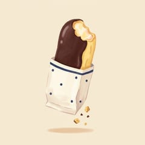
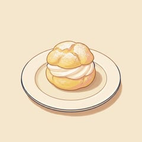
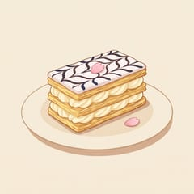
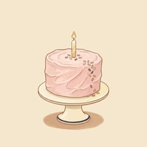
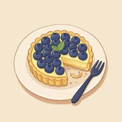
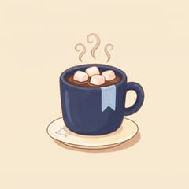

From Tomorrow
明日から
A train line closing in three days. Notes exchanged between two strangers — each dated a day they haven’t lived yet. A story about time, loss, and the moments we almost miss.
Read more about From Tomorrow
About the book
The cat finds you first.
Grey and white, one blue eye and one green, and absolutely no patience. He meows once, like an order, and walks away. You follow, because something in you already knows you should.
He leads you to Aoi Shiori, a little bookshop that wasn’t there yesterday and won’t be there tomorrow. The light inside is warm. Its owner, Mirai, smiles as if she has been waiting for you all day. And from a sky without a single cloud, it begins to rain.
Everyone who finds this place has lost something along the way. A dream. A goodbye. A piece of themselves. Mirai never asks which. She pours you something warm, and before you go, she asks you to take an umbrella from the box by the door.
Step beneath it, and the rain falls silent.
Please return the umbrella.
Someone else might need their day.
From the counter






Before it opens
There is no buy link yet, and no date I can promise you. There are two places the news will land first, and both of them are quiet.
A handful of letters a year, no more. The cover reveal, the release date and the first chapter all go out here before anywhere else.
My author page is where a book becomes real to the outside world. Follow it and The Blue Bookmark Bookshop will appear the moment it is listed — no email address required.
If you are on the advance reader list, your copy arrives by email before release. If you would like to be sure an email about this book really came from me, this page tells you how to check.
Available now
明日から
A train line closing in three days. Notes exchanged between two strangers — each dated a day they haven’t lived yet. A story about time, loss, and the moments we almost miss.
Read more about From Tomorrow
桜スライス・カフェ
Thirteen quiet stories from a café that was never just a café. A place where people arrive carrying something — and leave a little lighter. Your table is already waiting.
Read more about Sakura Slice Café
完璧な日の出
Every morning, Hikari chases the perfect sunrise. Then a photograph falls from the sky — already developed, already perfect, and dated tomorrow. A story about memory, loss, and the people we love who never truly leave.
Read more about The Perfect Sunrise
君がいたとき
Sou’s grandmother leaves him a cassette tape. When he plays it, he hears his own voice — older, crying, begging someone not to leave. A story about grief, attention, and the one direction time moves in.
Read more about When You Were There